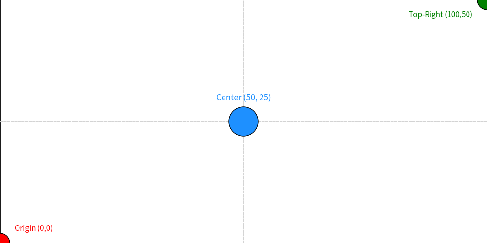
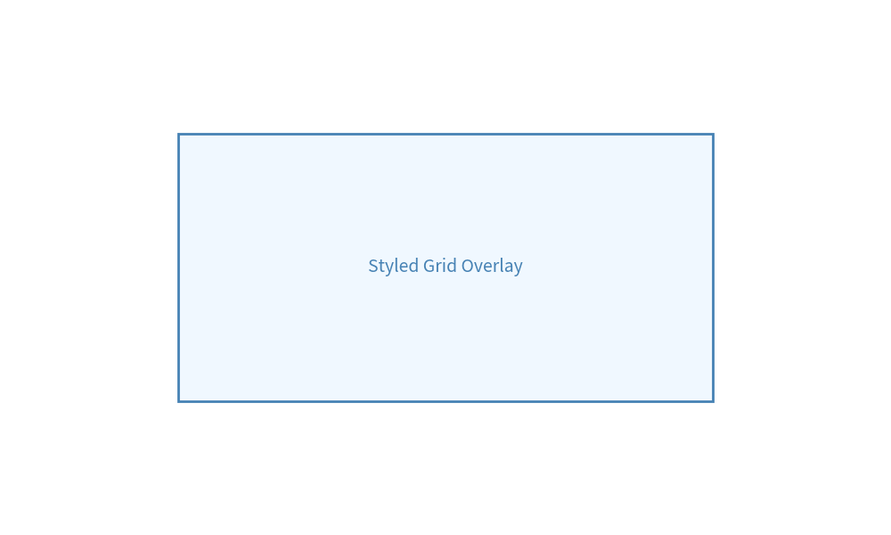
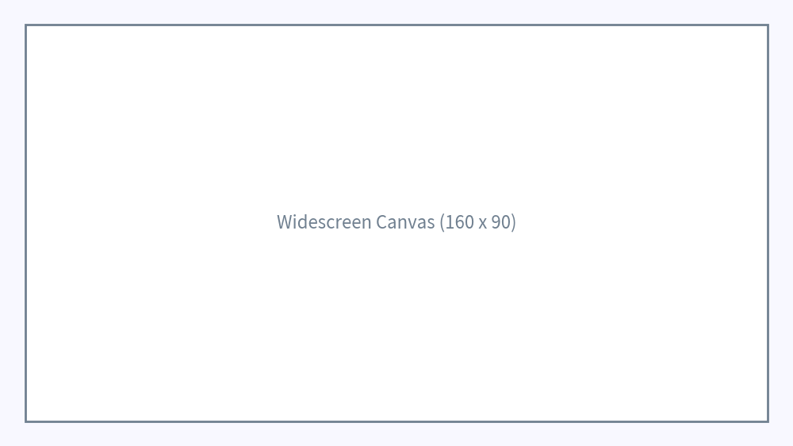
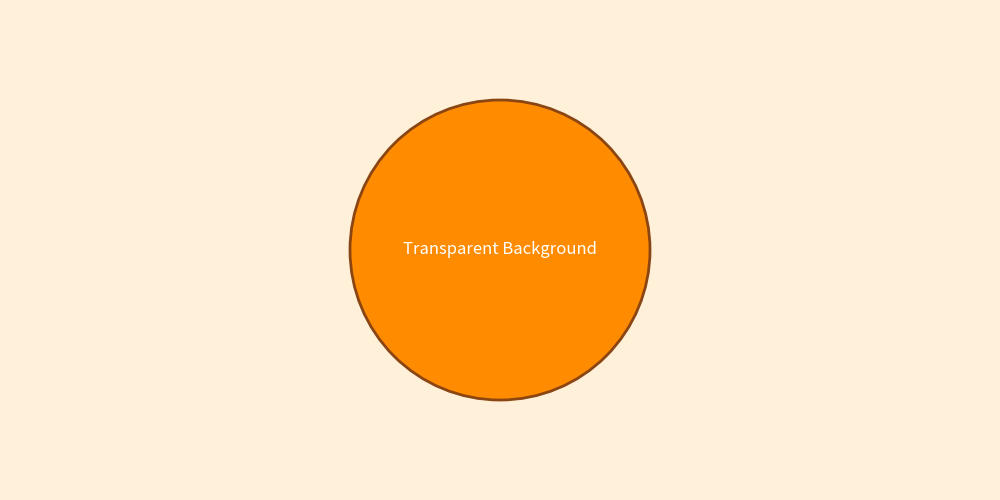

Canvas & Coordinate System
The Canvas is the foundational surface in Drawlib upon which all shapes, lines, images, icons, and text elements are drawn.
Drawlib manages the canvas state automatically behind public facade APIs like config(), save(), and clear(), ensuring that creating illustrations remains simple, declarative, and clean.
1. Canvas Architecture Overview
Drawlib follows a facade architecture where global functions in drawlib.canvas interact with an internal canvas singleton instance.
+-------------------------------------------------------------+
| User Code (APIs) |
| config() circle() line() save() |
+-------------------------+-----------------------------------+
| (interacts internally)
v
+-------------------------------------------------------------+
| Internal Canvas |
| Coordinates Style Stack Grid Engine Matplotlib|
+-------------------------------------------------------------+
Public Canvas APIs
config(...): Configures canvas parameters such as coordinate dimensions, DPI resolution, background colors, and grid overlays.save(...): Renders and exports the current canvas to an image file (PNG, JPG, WEBP, or PDF).clear(): Resets the canvas state, clearing all drawn elements and configurations.
2. 2D Cartesian Coordinate System
Drawlib uses a 2D Cartesian coordinate system (x, y) where (0, 0) is anchored at the bottom-left corner of the canvas.
from drawlib.canvas import config
from drawlib.colors import Colors, Colors140
from drawlib.lines import line
from drawlib.shapes import circle
from drawlib.text import text
from drawlib.types import LineStyle, ShapeStyle, TextStyle
# Configure 100x50 canvas
config(width=100, height=50)
# Axes
line(xy1=(0, 0), xy2=(100, 0), style=LineStyle(line_color=Colors.Black, line_width=2))
line(xy1=(0, 0), xy2=(0, 50), style=LineStyle(line_color=Colors.Black, line_width=2))
# Grid center lines
line(xy1=(0, 25), xy2=(100, 25), style=LineStyle(line_color=Colors140.LightGray, line_width=1, line_style="dashed"))
line(xy1=(50, 0), xy2=(50, 50), style=LineStyle(line_color=Colors140.LightGray, line_width=1, line_style="dashed"))
# Coordinate markers
circle(xy=(0, 0), radius=2, style=ShapeStyle(fill_color=Colors.Red, line_color=Colors.Black))
text(xy=(3, 3), text="Origin (0,0)", style=TextStyle(text_color=Colors.Red, text_size=11, text_halign="left"))
circle(xy=(50, 25), radius=3, style=ShapeStyle(fill_color=Colors140.DodgerBlue, line_color=Colors.Black))
text(xy=(50, 29), text="Center (50, 25)", style=TextStyle(text_color=Colors140.DodgerBlue, text_size=12, text_valign="bottom"))
circle(xy=(100, 50), radius=2, style=ShapeStyle(fill_color=Colors.Green, line_color=Colors.Black))
text(xy=(97, 47), text="Top-Right (100,50)", style=TextStyle(text_color=Colors.Green, text_size=11, text_halign="right"))

3. Configuring Canvas Grid
During the iterative process of positioning elements, enabling the grid overlay helps locate exact coordinates.
Grid Options
grid=True: Enables grid overlay during visual design.grid_only=True: Generates only the grid-overlay image without creating a second clean image file.grid_style: Applies a customLineStyleto normal grid lines.grid_centerstyle: Applies a customLineStyleto the center axis lines.
from drawlib.canvas import config
from drawlib.colors import Colors, Colors140
from drawlib.shapes import rectangle
from drawlib.text import text
from drawlib.types import LineStyle, ShapeStyle, TextStyle
# Custom grid styling
config(
width=100,
height=60,
grid=True,
grid_style=LineStyle(line_color=Colors140.PowderBlue, line_width=1, line_style="dotted"),
grid_centerstyle=LineStyle(line_color=Colors140.SteelBlue, line_width=2, line_style="solid")
)
rectangle(
xy=(50, 30),
width=60,
height=30,
style=ShapeStyle(fill_color=Colors140.AliceBlue, line_color=Colors140.SteelBlue, line_width=2)
)
text(
xy=(50, 30),
text="Styled Grid Overlay",
style=TextStyle(text_color=Colors140.SteelBlue, text_size=14)
)

4. Canvas Dimensions & Aspect Ratio
Canvas size defines the logical coordinate boundaries (width, height). By default, the canvas is 100 × 100.
Adjusting the logical canvas size changes the relative positioning scale without altering the base pixel output dimensions.
from drawlib.canvas import config
from drawlib.colors import Colors140
from drawlib.shapes import rectangle
from drawlib.text import text
from drawlib.types import ShapeStyle, TextStyle
# Set 16:9 aspect ratio coordinate space
config(width=160, height=90, background_color=Colors140.GhostWhite)
# Background border
rectangle(
xy=(80, 45),
width=150,
height=80,
style=ShapeStyle(fill_color=Colors140.White, line_color=Colors140.SlateGray, line_width=2)
)
text(
xy=(80, 45),
text="Widescreen Canvas (160 x 90)",
style=TextStyle(text_color=Colors140.SlateGray, text_size=16)
)

5. DPI & Output Resolution
Resolution and logical coordinate size are decoupled in Drawlib:
- Logical Size: Determines the
(x, y)coordinate limits (e.g.100x100). - DPI (Dots Per Inch): Determines output pixel density. Default DPI is 100.
Pixel Resolution Calculation
Drawlib treats standard canvas width as 10 inches.
- Default
dpi=100$\rightarrow$ $10\text{ in} \times 100\text{ DPI} = 1000\text{ px}$ image width. - High resolution
dpi=200$\rightarrow$ $10\text{ in} \times 200\text{ DPI} = 2000\text{ px}$ image width.
To generate exact Full HD (1920px width) output for a 1920x1080 canvas:
config(width=1920, height=1080, dpi=192)
# 10 inches * 192 DPI = 1920 pixels width
6. Background Color & Transparency
Canvas background color and opacity can be set via config():
background_color: Accepts anyColortuple or preset likeColors.Orange.background_alpha: Opacity value from0.0(transparent) to1.0(opaque).
from drawlib.canvas import config
from drawlib.colors import Colors140
from drawlib.shapes import circle
from drawlib.text import text
from drawlib.types import ShapeStyle, TextStyle
# Custom orange background with 0.15 transparency
config(width=100, height=50, background_color=Colors140.Orange, background_alpha=0.15)
circle(
xy=(50, 25),
radius=15,
style=ShapeStyle(fill_color=Colors140.DarkOrange, line_color=Colors140.SaddleBrown, line_width=2)
)
text(
xy=(50, 25),
text="Transparent Background",
style=TextStyle(text_color=Colors140.White, text_size=12)
)

[!NOTE] Setting
background_color=Colors.Transparentorbackground_alpha=0generates a transparent background PNG. Note that format limitations apply (e.g. JPG does not support alpha channels).
7. Exporting & Saving (save / clear)
Exporting illustrations is handled by save():
from drawlib.canvas import save
# Save as <script_name>.png in current directory
save()
# Save with custom file path
save(file="output/diagram.png")
# Save in specific format (PNG, JPG, WEBP, PDF)
save(file="output/diagram", format="pdf")
Supported Output Formats
- PNG: Standard lossless format with alpha support (default).
- JPG: Compressed image format.
- WEBP: Modern web image format.
- PDF: Vector document format.
Refreshing Canvas State (clear)
When generating multiple illustrations within a loop or single script, call clear() between images to reset all drawn items and canvas configurations.